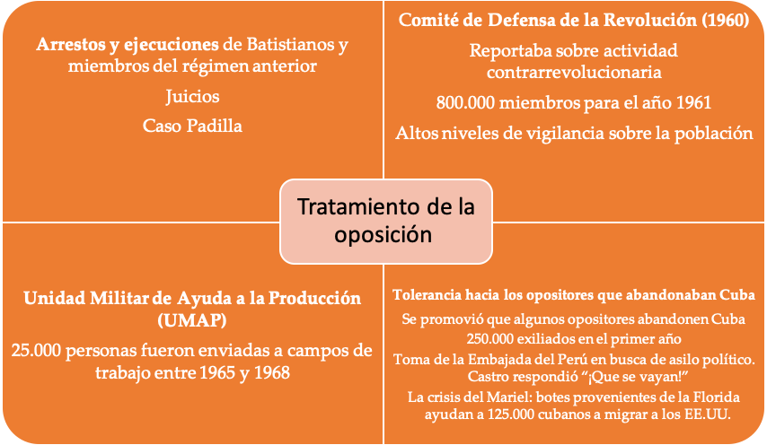

IB Docs (2) Team
IB Docs (2) Team

2. Gobierno de Fidel Castro

Castro tenía como un objetivo llevar justicia social al pueblo cubano. Sus políticas en materia de educación y salud transformaron la vida de la gente común. Más controvertidas fueron sus políticas económicas, que provocaron la hostilidad tanto de las clases medias como de los EE.UU. Asimismo, sus métodos que incluyeron la persecución, el control y la represión, y el establecimiento de un Estado unipartidista son cuestionados.
Preguntas orientadoras:
¿Hasta qué punto fueron exitosas las políticas económicas, políticas, culturales y sociales de Castro?
- ¿Qué tan exitosas fueron las políticas económicas de Castro?
- ¿Cuán exitosas fueron las políticas sociales de Castro?
- ¿Cuán exitosas fueron las políticas políticas de Castro?
- ¿Cuán exitosas fueron las políticas culturales de Castro?
- ¿Cuál fue el impacto de la Revolución Cubana en la región?
- ¿Hasta qué punto fue Castro un líder populista?
1. ¿Hasta qué punto fueron exitosas las políticas económicas, políticas, culturales y sociales de Castro?
 Como han visto, Castro dio una idea clara de sus planes para Cuba en su discurso "La historia me absolverá". En él se establecieron "cinco leyes revolucionarias" que serían la base de su manifiesto:
Como han visto, Castro dio una idea clara de sus planes para Cuba en su discurso "La historia me absolverá". En él se establecieron "cinco leyes revolucionarias" que serían la base de su manifiesto:
- devolver el poder al pueblo
- dar derechos sobre la tierra a los que tenían u ocupaban parcelas más pequeñas
- otorgar a los trabajadores una participación del 30% en los beneficios de las empresas
- otorgar a los trabajadores de las plantaciones de azúcar una participación del 55% en los beneficios
- poner fin a la corrupción.
También prometió pensiones, hospitales, educación pública, nacionalización de servicios públicos y control de los precios de alquileres.
¿Qué éxito tuvieron las políticas económicas de Castro?
Los objetivos económicos de la revolución en los primeros años fueron reducir la dependencia de Cuba del azúcar, diversificar la producción agrícola, desarrollar el sector industrial, lograr el pleno empleo, mejorar las condiciones de vida y romper la dependencia del país de los Estados Unidos.
1. 1959 - 1962
La primera acción del nuevo gobierno de Cuba fue redistribuir los ingresos a la clase obrera rural y urbana. En mayo de 1959, Castro decretó la Ley de Reforma Agraria que limitaba la extensión de la propiedad de la tierra y daba al gobierno el derecho de expropiar las propiedades privadas que excedieran los límites establecidos por el Estado. A cambio, los propietarios de las tierras recibían bonos en compensación. El gobierno distribuyó las tierras expropiadas en pequeñas parcelas de cooperativas establecidas, que administró el Instituto de Reforma Agraria (INRA). El 85% de todas las explotaciones agrícolas cubanas fueron afectadas por ley de reforma, debido a la gran concentración de la propiedad de la tierra bajo el antiguo régimen. Hay que señalar que a esta ley le siguió la segunda Ley Agraria de 1963, en virtud de la cual se expropiaron miles de explotaciones agrícolas medianas para impedir la existencia de campesinos "ricos". Las granjas estatales se convirtieron ahora en la forma dominante de agricultura, controlando el 70% de la tierra y, también, la exportación de todos los cultivos principales. Los pequeños agricultores que quedaban fueron obligados a vender sus cosechas al gobierno a bajo costo.
Otras reformas incluyeron
- un aumento de los salarios
- la reducción de los alquileres
- impuestos a la importación de bienes de lujo
- expropiación de empresas americanas
- la toma de control del sistema bancario por parte del gobierno
Todas estas reformas fueron acogidas con entusiasmo por la clase obrera, lo que hizo que Castro y el PSP se hicieran más populares y pudieran consolidar su posición. Los salarios crecieron un 40% en los tres primeros años y el poder adquisitivo global un 20%. El desempleo fue prácticamente eliminado.
Sin embargo, la hostilidad de las clases medias y altas a estas reformas significó que entre enero de 1959 y octubre de 1962, aproximadamente 250.000 personas abandonaron Cuba. La fuga de personal especializado y técnicos significó futuras dificultades para la planificación económica.
Los Estados Unidos también estaban alarmados y el conflicto entre los dos países se intensificó rápidamente.
Eisenhower suspendió la importación de azúcar cubano en 1960 y extendió las sanciones económicas a un embargo comercial de azúcar, petróleo y armas. Esto llevó a que la Unión Soviética interviniera para comprar azúcar. En 1961 Kennedy amplió los términos de las sanciones y la tensión aumentó aún más cuando Castro nacionalizó las refinerías de petróleo de los Estados Unidos. El bloqueo económico de los Estados Unidos hizo que las piezas de repuesto de maquinaria proveniente de los Estados Unidos se convirtieran en un problema, especialmente en la industria azucarera.
Además:
- Cuba fue excluida de la OEA [había sido miembro fundador]
- Todos los miembros de la OEA, , cortan los lazos comerciales y diplomáticos con Cuba
- Kennedy intentó detener el comercio entre miembros de la OTAN y Cuba
- Kennedy lanzó la Alianza para el Progreso - un programa para ayudar al desarrollo de América Latina
- La Operación Mangosta involucró a la CIA con actos de sabotaje contra la economía cubana.
Estas acciones animaron a Castro a recurrir a la URSS para asegurar la supervivencia económica de Cuba.
Otros conflictos se desarrollaron como resultado de estas primeras reformas. Los agricultores, obligados a vender sus productos al Estado a precios bajos, tenían pocos incentivos para producir un excedente, por lo que los niveles de producción de azúcar eran bajos. Además, con más dinero para gastar, los cubanos comenzaron a consumir más alimentos. Cuba ya no importaba bienes de consumo y alimentos, lo que provocó una mayor escasez; el racionamiento comenzó en marzo de 1962.
Tarea Uno
ENFOQUES DE APRENDIZAJE: Habilidades de pensamiento
Según Calvocoressi, ¿qué problemas económicos tenía Cuba en 1962?
Las medidas económicas tomadas por el gobierno [de Castro] habían sido, por su propia admisión, mal concebidas. La pasión por la industrialización condujo a la construcción de fábricas de artículos que podían ser importados del extranjero a un costo menor que el costo de las materias primas para su fabricación. En el campo, los campesinos mostraron en todo el mundo su aversión a las cooperativas, la nacionalización de la tierra y el cultivo forzado de cosechas destinadas a la venta a precios bajos y fijos. La clase media, que había sido un ingrediente más activo en la revolución que el campesinado o la clase obrera urbana, se antagonizó cuando la nacionalización se extendió de las empresas extranjeras a las nacionales, y cuando el nuevo régimen adoptó las viejas y malas costumbres de sus predecesores al encerrar a los opositores políticos en cárceles ruinosas. En 1962 hubo una crisis económica, una negativa general de los campesinos a trabajar, racionamiento de alimentos y una desilusión generalizada, descontento y pobreza.
World Politics Since 1945, Peter Calvocoressi, 1989
Tarea dos
ENFOQUES DE APRENDIZAJE: Habilidades de pensamiento
- Elabora un mapa mental que refleje el impacto de las reformas económicas de 1959 a 1962
- Discute acerca de qué grupos de la sociedad cubana se beneficiaron de las reformas de Castro entre 1959 y 1962 y cómo estas reformas reforzaron el apoyo al régimen.
- ¿Qué grupos no se beneficiaron y hubieran preferido salir de Cuba como parte del éxodo?
- Discute sobre las razones por las que Castro permitió a los que se oponían a su régimen salir de Cuba.
- ¿Qué significaba el éxodo de ciertos grupos para la sociedad cubana bajo Castro?
- ¿Cuál fue el impacto para Cuba del aumento de la dependencia económica de la URSS?
1963 a 1970
"Le hemos costado demasiado a la gente en nuestro proceso de aprendizaje. ...El proceso de aprendizaje de los revolucionarios en el campo de la construcción económica es más difícil de lo que habíamos imaginado."
(Castro, 26 de julio de 1970)
 El fracaso de la estrategia de "Industrialización instantánea" llevó a una reevaluación de las realidades económicas de Cuba y se implementó una nueva estrategia.
El fracaso de la estrategia de "Industrialización instantánea" llevó a una reevaluación de las realidades económicas de Cuba y se implementó una nueva estrategia.
A partir de 1963, Castro decidió volver a poner énfasis en la agricultura y en la producción intensiva de azúcar. Se esperaba que esta política aportara las divisas necesarias para ayudar a la industrialización y permitir la diversificación de la economía.
En 1968, Castro lanzó la "Ofensiva Revolucionaria", que puso énfasis en los incentivos morales para aumentar la productividad. Se buscaba no solo aumentar la producción sino también crear el "nuevo hombre socialista". Esto se basaba en el argumento de Guevara de que se podía motivar a los trabajadores, sin incentivos materiales, a trabajar por el bien común.
Bajo la ofensiva revolucionaria Castro ordenó la expropiación de todas las empresas privadas restantes, como las tiendas y restaurantes familiares; todas ellas debían ser propiedad del Estado y estar administradas por él. Sin embargo, en lugar de aumentar la productividad, la ofensiva produjo un caos administrativo, mientras que la política de incentivos morales llevó a altos niveles de ausentismo.
Para superar estos problemas y, además, intentar ganar suficiente dinero para pagar las deudas con la Unión Soviética - Castro anunció que 1970 sería el "Año de los Diez Millones" y que Cuba batiría los récords anteriores al cosechar 10 millones de toneladas de azúcar ene se año. Esta fue también una campaña política, diseñada para mostrar que la revolución todavía podía lograr grandes cosas. Castro la llamó 'una campaña de liberación' para "defender el honor, el prestigio, la seguridad y la confianza en el país" (9 de febrero de 1970.)
Para lograr este ambicioso objetivo de 10 millones, Castro apeló a la "militarización" del trabajo, es decir, que el corte de azúcar se organizara de forma militar con personas de todos los sectores cortando caña codo con codo. Los militares también estaban involucrados, ocupando las regiones productoras de azúcar y dirigiendo los ingenios azucareros.
Sin embargo, la campaña no sólo no alcanzó su ambicioso objetivo, sino que dañó a la economía cubana en su conjunto. Para obtener tanto como cosecharon (8,5 millones de toneladas) la industria azucarera fue dañada haciendo que las cosechas subsiguientes fueran generalmente pobres. Además, los recursos y la mano de obra fueron tomados de otros sectores, los cuales sufrieron un impacto negativo. No sólo el cultivo de azúcar fue afectado, sino también la forestación y la pesca. La campaña no logró levantar la moral y el fervor revolucionario. Los cubanos se tornaron más escépticos y los soldados estaban desmoralizados por haber sido involucrados en una campaña económica que no se relacionaba con su función de defensa y que, además, había fracasado. Para Castro fue un golpe a su credibilidad política.
Tarea uno
ENFOQUES DE APRENDIZAJE: Habilidades de pensamiento
Lee este artículo del New York Times.
Este artículo es un relato del discurso que Castro dio en un discurso a la nación, el 26 de julio de 1970, después del fracaso del "Año de los Diez Millones".
- ¿Qué problemas causados por esta campaña identifica Castro?
- ¿A quién culpa Castro de los fracasos?
- ¿Qué soluciones propone?
Con referencia al origen, propósito y contenido analizar el valor y las limitaciones de esta Fuente para un historiador que estudia la campaña del "Año de los Diez Millones".
MIAMI, 26 de julio-1970
El primer ministro Fidel Castro dibujó esta noche un panorama sombrío de la economía cubana, con condiciones en muchos sectores que bordean el caos.
Asumió la culpa por el desorden en prácticamente todos los segmentos de la vida económica de la nación, y dijo que renunciaría si el pueblo cubano lo deseaba.
Su valoración de la economía, se hizo en un discurso en La Habana que marcó el 17º aniversario de su movimiento revolucionario. Previendo que la economía se enfrentaría a nuevas tensiones en los próximos cinco años, el Sr. Castro dijo que las grandes mejoras sólo serían posibles a finales de esta década.
La cosecha récord fracasó
Dijo que los esfuerzos para producir una cosecha de azúcar récord de 10 millones de toneladas este año, que fracasaron en alrededor de 1,5 millones de toneladas, habían sido desastrosos para la producción en el resto de la agricultura y en los campos de la industria y los servicios. Dijo que, con la excepción de un pequeño aumento de la ración de arroz, pescado y huevos, todos los demás alimentos y productos manufacturados recibidos de la Unión Soviética se distribuyeron en cantidades menores que antes.
Reveló que, debido a la disminución de la producción, los cigarrillos y los puros también se habían racionado. Antes de la revolución de 1959, Cuba era un gran productor de tabaco y cigarros.
No sólo era menor la producción, sino que la "irresponsabilidad" administrativa y los problemas de transporte ocasionalmente paraban la producción por completo, dijo el Sr. Castro.
Dijo que en algunos casos el ganado cargado en los vagones de ferrocarril en La Habana no había sido descargado durante días. Los puertos cubanos también están obstruidos con mercancías debido a la falta de transporte, dijo, e incluso las fábricas que tienen materias primas han reducido su producción al mínimo debido a la movilización indiscriminada de personal hacia la agricultura.
El Sr. Castro dijo que la productividad laboral era baja, el ausentismo laboral alto y la calidad de los productos cubanos inferior. Dijo que había visto zapatos que se habían desintegrado después de cinco días de uso.
"El enemigo dirá que nuestras dificultades crecen y tendrá razón; el enemigo dirá que tenemos problemas de ineficiencia y tendrá razón; el enemigo dirá que hay descontento y tendrá razón y dirá que hay fricciones y tendrá razón y no tenemos miedo de admitirlo", dijo el Primer Ministro.
Reconoce la responsabilidad
Citó una serie de estadísticas adversas de lo que dijo que era un informe secreto sobre el rendimiento de la economía, y declaró que la mayor responsabilidad recaía en los líderes del Gobierno revolucionario. Luego añadió:
"En primer lugar, la responsabilidad es mía. Desafortunadamente, esta autocrítica no puede ser fácilmente acompañada por soluciones adecuadas. Lo mejor sería decir al pueblo que busque otros líderes, pero esto sería hipócrita de mi parte. El pueblo, por supuesto, puede sustituirme ahora mismo si quiere".
Mientras la multitud gritaba "No, no", el Sr. Castro continuó diciendo que el problema más difícil de la dirigencia cubana había sido "nuestra ignorancia" sobre cómo gobernar y añadió que él no era una excepción.
Mientras declaraba que no tenía una solución inmediata a los problemas económicos de Cuba, el Primer Ministro propuso varios cambios.
Dijo que se crearían comités al más alto nivel para coordinar cada sector económico para demostrar eficiencia y planificación. En el nivel inferior, la dirección colectiva se organizaría en las fábricas, con los trabajadores teniendo tanta injerencia sobre su funcionamiento como el administrador y los funcionarios del partido comunista local.
"No traemos soluciones mágicas", dijo el Sr. Castro. "Sólo a través de la voluntad de la gente nuestros problemas serán resueltos."
También anunció que pronto se llevaría a cabo un importante realineamiento del Gobierno y del Partido Comunista. "Es necesario reemplazar a algunos de nuestros camaradas que se han desgastado bajo la presión del trabajo”, dijo.
En otra parte de su discurso, el Primer Ministro reveló que Antonio Arguedas, el ex ministro del Interior boliviano que había dado a Cuba una copia del diario del difunto Ernesto Che Guevara, había traído recientemente a La Habana la máscara mortuoria del revolucionario y sus dos manos embalsamadas. El Sr. Arguedas llegó a Cuba a finales de junio.
El Sr. Castro dijo que se construiría un mausoleo al Mayor Guevara en La Habana
Castro logró sobrevivir políticamente ofreciendo su renuncia a las multitudes que se negaron a aceptarla. Sin embargo, el fracaso de la campaña requirió un cambio de dirección; las ideas de Guevara sobre el voluntariado y el autosacrificio que él había creído que podían motivar a la nación cubana tuvieron que ser abandonadas. Había que abandonar la esperanza de que el excedente de azúcar pudiera venderse para proporcionar dinero para la diversificación económica y para pagar a la Unión Soviética. Cuba tenía que aceptar ahora una mayor dependencia económica de la Unión Soviética.
Se restablecieron los mercados agrícolas y se dio más autonomía a las empresas estatales. Se introdujeron incentivos materiales, como bonos, y el gobierno autorizó la contratación privada de servicios como plomería. Estos cambios fueron populares. Siempre que los trabajadores cumplieran sus obligaciones con sus empleadores de empresas estatales, podían ser contratados de forma privada para trabajar por las noches o los fines de semana.
Además, Cuba se vinculó aún más a la economía soviética:
- Castro fue a Moscú para finalizar un acuerdo económico de 15 años con Brezhnev que le dio a Cuba aún más subsidios, incluyendo un aumento en el precio del azúcar, el aplazamiento del pago de la deuda y 350 millones de dólares de inversión.
- Los asesores soviéticos recomendaron el establecimiento del Sistema de Dirección y Planificación de la Economía, y la adopción del primer "plan quinquenal" de Cuba.
Tarea dos
ENFOQUES DE APRENDIZAJE: Habilidades de pensamiento
¿Cuál es el mensaje del gráfico sobre la ayuda soviética a la economía cubana? Use su conocimiento de las políticas internas y externas de Cuba para explicar las fluctuaciones de la ayuda dada.
¿Cuáles fueron las implicaciones para Cuba de esta situación? (esto también se trata en el video - ver siguiente tarea)

Asistencia económica soviética a Cuba 1960-1990 (en millones de dólares)
Key 1: créditos para comercio; Key 2: precios subsidiados;
Key 3: asistencia para el desarrollo
Sin embargo, a finales de la década de 1970 hubo más problemas económicos. La crisis económica mundial de los 70 significó que la Unión Soviética redujo el precio del azúcar cubano. En 1980 hubo un éxodo de 125.000 cubanos a Estados Unidos - el éxodo del Mariel. En 1986 Castro lanzó una "Campaña de Rectificación" que una vez más trató de invocar los incentivos morales y el voluntarismo como la fuerza clave para rejuvenecer la economía.
¿Qué tan exitosas fueron las políticas sociales de Castro?
Actividad de inicio
La siguiente fuente proviene de un informe del Banco Mundial de 2002 sobre los servicios sociales de Cuba. En pares, identifiquen los éxitos que se esbozan con respecto a los progresos de Cuba en materia de educación y salud desde 1959.
Cuba ha adquirido reconocimiento internacional por sus logros en las esferas de la educación y la salud, con unos resultados de prestación de servicios sociales que superan a la mayoría de los países del mundo en desarrollo y que en algunas esferas se ajustan a las normas del primer mundo. Desde la revolución cubana de 1959, y el posterior establecimiento de un gobierno comunista de partido único, el país ha creado un sistema de servicios sociales que garantiza el acceso universal a la educación y la atención de la salud que proporciona el Estado. Ese modelo ha permitido a Cuba lograr una alfabetización casi universal, la erradicación de ciertas enfermedades, un acceso generalizado al agua potable y a los servicios básicos de saneamiento. Su tasa de mortalidad infantil figura entre las más bajas y la expectativa de vida está entre las más largas de la región. Un examen de los indicadores sociales de Cuba revela una pauta de mejoramiento casi continuo desde el decenio de 1960 hasta finales del decenio de 1980. Varios índices importantes, como la esperanza de vida y la mortalidad infantil, siguieron mejorando durante la crisis económica del país en el decenio de 1990, aunque otras esferas, como la incidencia de ciertas enfermedades y la mortalidad de los mayores de 65 años, se vieron afectadas negativamente. Hoy en día, el desempeño social de Cuba se encuentra entre los mejores del mundo en desarrollo, según lo documentan numerosas fuentes internacionales, entre ellas la Organización Mundial de la Salud, el Programa de las Naciones Unidas para el Desarrollo y otros organismos de las Naciones Unidas, y el Banco Mundial.
Educación

Desde el principio, el ataque al analfabetismo fue visto por los líderes cubanos un esfuerzo profundamente político más que pedagógico, íntimamente ligado a la transformación revolucionaria de la sociedad y la economía.
Richard R. Fagen, The Transformation of Political Culture in Cuba (Stanford: Stanford University Press, 1969), p. 35
Como han visto, la revolución cubana siempre prometió igualdad y justicia social. Una forma clave de lograr esto para Castro fue a través de sus políticas de educación. Fuera de La Habana, las tasas de analfabetismo cubano eran muy altas. Así, 1961 fue nombrado el "año de la educación" y se enviaron "brigadas de alfabetización" al campo para construir escuelas, formar nuevos educadores y enseñar a leer y escribir a los campesinos predominantemente analfabetos. Cuba adoptó el lema: "Si no sabes, aprende. Si sabes, enseña'.
Tarea Uno
ENFOQUES DE APRENDIZAJE: Habilidades de pensamiento
De acuerdo con la siguiente fuente, ¿por qué Castro hizo de la educación una prioridad clave?
La falta de educación es el mejor índice del estado de opresión política, atraso social y explotación en que se encuentra un país. Los índices de explotación y atraso económico coinciden exactamente con los índices de analfabetismo y la falta de escuelas y universidades. Los países más explotados económicamente y más oprimidos políticamente son los que tienen más analfabetos... Sólo una revolución es capaz de cambiar totalmente el escenario educativo de un país, porque también cambia totalmente el escenario político, el escenario económico y el escenario social.
Fidel Castro, Revolución, 7 de septiembre de 1961
Tarea dos
ENFOQUES DE APRENDIZAJE: Habilidades de pensamiento
Vea el siguiente video que contiene relatos de primera mano de personas que salieron a las zonas rurales para enseñar como parte de la campaña de alfabetización. Discuta sobre lo siguiente en parejas o en clase:
¿Cuáles fueron las características de esta campaña?
¿Qué factores contribuyeron a su éxito?
¿Qué impacto tuvo la campaña en los propios voluntarios? ¿Cuáles crees que fueron los objetivos de Castro en la movilización de la juventud de clase media para participar en la campaña?
Al mismo tiempo, se introdujo la educación profesional para los trabajadores, y un amplio programa de educación para adultos animó a todos a alcanzar al menos el nivel de educación secundaria. Al término de la campaña, se había enseñado a leer y escribir a 707.212 adultos, lo que elevó la tasa de alfabetización nacional al 96%.
En general, la campaña de educación inicial fue un gran éxito y prácticamente eliminó el analfabetismo en Cuba en unos pocos años. También sirvió para socializar a muchos cubanos de las ciudades y el campo en los nuevos valores de la Revolución. A mediados de los 80, todos los niños en edad de asistir a la escuela primaria y sólo el 2% de la población era analfabeta.
Salud
Al igual que con la educación, el cuidado de la salud era una prioridad para el gobierno de Castro. El principio de la atención sanitaria gratuita se consideró una medida esencial y se puso en práctica de inmediato. El Che Guevara esbozó los objetivos de la asistencia sanitaria cubana en un ensayo, sobre la medicina revolucionaria: "La labor que hoy se le encomienda al Ministerio de Salud y organizaciones similares es proporcionar servicios de salud pública al mayor número posible de personas, instituir un programa de medicina preventiva y orientar a la población en la realización de prácticas higiénicas".
Estos objetivos demostraron ser un desafío. Antes de la revolución, Cuba tenía 6.000 médicos, de los cuales el 74% trabajaba en La Habana, donde vivían los sectores más prósperos. Después de la revolución, más de la mitad de los médicos cubanos se fueron al extranjero; sin embargo, al igual que con la campaña de alfabetización, hubo una vigorosa movilización de la población. El gobierno reclutó a 750 médicos y estudiantes de medicina para trabajar en las montañas y comunidades costeras donde había poco o ningún acceso a los servicios médicos. Este Servicio Médico Rural tenía como objetivo "proporcionar prevención de enfermedades y revitalizar los servicios de salud para los más necesitados, ya sea porque son pobres, tienen una salud precaria o viven lejos de los centros urbanos". Otra característica fundamental del sistema de salud cubano han sido las policlínicas especializadas que se establecieron en la década del 70.
En 1976, el programa de salud de Cuba se integró a la Constitución en el artículo 50.
Al igual que con la alfabetización, las campañas para mejorar la salud fueron un éxito. La tasa de mortalidad infantil se redujo de 60 por cada mil nacidos vivos en 1958 a 13,3 a mediados de los 80. Mientras que en vísperas de la revolución sólo había un médico por cada 5.000 cubanos, la proporción había llegado unos treinta años después a uno por cada 400. La esperanza de vida aumentó de 57 a 74 años.
Vivienda
Se proporcionaron nuevas viviendas baratas. Se destinaron fondos estatales, en particular a las zonas rurales, para proporcionar instalaciones básicas como agua corriente y electricidad. Como resultado de ello surgieron en el campo pequeños pueblos rurales de entre 500 y 2.000 habitantes dotados de agua corriente, electricidad, clínicas y escuelas.
Mujeres
Debe llegar el día en que tengamos un Partido de hombres y mujeres, y un liderazgo de hombres y mujeres, y un Estado de hombres y mujeres, y un Gobierno de hombres y mujeres.
Fidel Castro
En los años que transcurrieron entre la independencia de Cuba y la revolución, los grupos y activistas feministas lograron avances en la batalla por la igualdad; las mujeres lograron el voto en 1934 y la constitución de 1940 consagró su igualdad en la ley. Sin embargo, a pesar de tener muchos derechos en teoría, la sociedad cubana seguía siendo patriarcal; las mujeres seguían siendo discriminadas en el lugar de trabajo y en su mayor parte se consideraba que el lugar de la mujer estaba en el hogar. Dentro de la sociedad cubana el 'machismo' impregnaba la cultura.
Las mujeres desempeñaron un papel en la revolución de 1959. Después de la revolución, Fidel Castro y Vilma Espín, una ingeniera química, feminista y líder del movimiento revolucionario en las provincias orientales, fundaron la Federación de Mujeres Cubanas (FMC) para promover los derechos de la mujer, la igualdad de género y los derechos de salud reproductiva. Sus principales objetivos eran incorporar a la mujer a la fuerza de trabajo y promover su participación en el proceso de cambio social y económico. La FMC desempeñó un papel muy importante en las cruzadas de alfabetización y la enseñanza profesional.
De hecho, Castro necesitaba que las mujeres formaran parte activa de la fuerza de trabajo a fin de lograr sus objetivos económicos. Se aprobaron nuevas leyes para garantizar que las mujeres pudieran acceder a todos los empleos, incluidos los de sectores como la construcción y la tecnología de la información, que anteriormente habían estado dominados por los hombres; se establecieron servicios de guarderías infantiles para permitir que más mujeres se incorporaran a la fuerza de trabajo. Muchas mujeres se unieron a las Legiones Agrícolas, trabajando en los campos y otras se involucraron en la vida política.
El Código de la Familia de 1975 estableció en la ley la igualdad de la mujer
- económicamente: "los sueldos, salarios, pensiones y otros ingresos obtenidos por el marido y la mujer durante el matrimonio pertenecen a ambos”
- en la casa:"Ambas partes deben cuidar de las familias que han creado. Deben participar en el funcionamiento del hogar...”
- en el divorcio
Sin embargo, a pesar de la expectativa expresada en el artículo 44 de la Constitución cubana (1976), en el que se afirma que "El Estado garantiza a la mujer las mismas oportunidades y posibilidades que al hombre para lograr la plena participación de la mujer en el desarrollo del país", parecía que en 1980 no se habían producido avances sustanciales hacia un verdadero cambio de la condición de la mujer en la sociedad:
- la expectativa de que las mujeres siguieran haciendo todas las tareas domésticas y se ocuparan del cuidado de los niños se mantenía y por lo tanto las mujeres se encontraban trabajando en un "doble turno". En última instancia, muchas mujeres tuvieron que dejar de trabajar.
- Las mujeres se enfrentaron a la discriminación en el lugar de trabajo y el número de mujeres en la fuerza de trabajo siguió siendo menor de lo que el gobierno hubiera querido.
- Sólo el 13,2% de los miembros del Partido Comunista eran mujeres
- En las nuevas asambleas introducidas en 1976, el porcentaje de mujeres era extremadamente bajo. Castro comentó que "El resultado demuestra cómo las mujeres todavía sufren de discriminación y desigualdad .... y cómo en los rincones de nuestra conciencia viven de viejos hábitos del pasado.”
Tarea Uno
ENFOQUES DE APRENDIZAJE: Habilidades de pensamiento e investigación
En grupos investiguen el papel que desempeñaron las mujeres en la revolución cubana y el impacto de la victoria de Castro en el papel de la mujer en la sociedad cubana, investigando más a fondo los puntos mencionados anteriormente.
Elaboren una exposición sobre su investigación titulada:
"El impacto de la revolución cubana en las mujeres
Su exposición debe incluir una evaluación de la medida en que cambió la posición de la mujer en la sociedad. Por ejemplo, evalúen la ausencia de mujeres en posiciones políticas altas y el problema de reconciliar los objetivos del gobierno para las mujeres con las expectativas tradicionales que existían sobre ellas.
Haga clic en el ojo para ver los puntos que debería considerar incluir:
Período anterior a la revolución:
- Las mujeres tenían derecho a votar desde 1934
- La igualdad ante la ley 1940
- Derecho a la igualdad en la remuneración
- El estatus social siguió siendo "tradicional”
- Discriminación en el trabaj
El papel de las mujeres en la revolución cubana, por ejemplo, en el movimiento del 26 de julio de Castro:
- Vilma Espín
Involucrada en los levantamientos urbanos en apoyo al desembarco del Granma. Casada con Raúl Castro. Fundadora de la FMC
- Haydee Santamaria
Participó en el asalto al cuartel de Moncada y en lucha en Sierra Maestra. Fundadora de la institución cultural Casa de las Américas.
- Melba Hernández
Participó en el asalto al cuartel de Moncada. Ocupó varios cargos públicos en el gobierno de Castro
- Celia Sánchez
Responsable de ayudar al desembarco de la fuerza del Granma. Promovió la creación de un pelotón femenino en la Sierra Maestra. Tuvo varios cargos públicos en el gobierno revolucionario.
Acciones tomadas después de la Revolución para asegurar la igualdad de la mujer:
- El papel de la FMC en Cuba
- Legislación aprobada después de 1959
- Repercusiones del Código de Familia, 1975
Las minorías y los grupos religiosos
Afrocubanos
Los afrocubanos constituían aproximadamente el 50% de la población cubana y habían sufrido discriminación en todos los ámbitos antes de la revolución. Castro creía que ese racismo manifiesto estaba en conflicto directo con su compromiso con la justicia social y la igualdad y aprobó políticas para eliminar la segregación en playas, parques, lugares de trabajo y clubes sociales. Prohibió todas las formas de discriminación legal y abierta, incluida la discriminación en el empleo y la educación. Además, las reformas económicas y sociales tuvieron un impacto positivo en la mayoría de los afrocubanos, que eran los más bajos en la escala social. El acceso a la vivienda, la educación y los servicios de salud mejoró drásticamente, así como la representación de los afrocubanos en una serie de profesiones.
A los tres años de su gobierno, Fidel Castro declaró que la Revolución había eliminado el racismo, haciendo que cualquier discusión adicional sobre las desigualdades raciales fuera un tema tabú. Sin embargo, muchos sostienen que el racismo seguía existiendo y que, por ejemplo, la política educativa y la cultura oficial seguían siendo fuertemente eurocéntricas. Los afrocubanos estaban poco representados en los niveles superiores del Partido Comunista, la administración pública o las industrias estatales. Así pues, se puede argumentar que el racismo no se había eliminado. Sin embrago, todo intento de los intelectuales de plantear la cuestión del racismo se trató con dureza y silenciado.
La religión católica
La relación del estado con la iglesia católica fue inicialmente hostil. Al principio algunos sectores de la Iglesia Católica acogieron la revolución como una oportunidad para llevar a cabo la justicia social; sin embargo, otros en la Iglesia vieron la revolución con sospecha, especialmente cuando Castro se declaró abiertamente marxista-leninista y nacionalizó las escuelas, eliminando así toda influencia religiosa.
Castro veía al catolicismo como representante de intereses extranjeros y no permitía que los obispos se involucraran en comentarios políticos o sociales. De hecho, Cuba abrazó oficialmente el ateísmo; los católicos practicantes y otros creyentes eran vistos con sospecha y no se les permitía unirse al Partido Comunista. La constitución de 1976 dejó claro que:
Es ilegal y está penado por la ley oponer la propia fe o creencia religiosa a la Revolución, a la educación o al cumplimiento del deber de trabajar, defender el país con las armas, mostrar reverencia por sus símbolos y cumplir otros deberes establecidos por la Constitución.
Sin embargo, con el fin de la Guerra Fría, esta situación cambió y en 1998 el Papa Juan Pablo II visitó Cuba. La constitución fue enmendada y se permitió a la gente unirse a la iglesia católica. La separación de la iglesia y el estado, sin embargo, continuó.
Tarea Uno
ENFOQUES DE APRENDIZAJE: Habilidades de pensamiento y comunicación
De a dos consideren la siguiente pregunta:
¿Hasta qué punto Cuba tuvo más éxito en las políticas sociales que en las económicas?
¿Qué tan exitosas fueron las políticas culturales de Castro?
Tarea Uno
ENFOQUES DE APRENDIZAJE: Habilidades de pensamiento y comunicación
Las políticas culturales de Castro fueron diseñadas para eliminar la influencia extranjera y restablecer y enfatizar los valores nacionalistas y revolucionarios.
- En grupos, investiguen diferentes aspectos de la cultura cubana. Pueden dividir la tarea para centrarse en diferentes áreas y luego presentar al resto del grupo sus hallazgos.
- Consideren si las políticas de Castro tuvieron éxito en la promoción de la cultura y también si logró su objetivo de utilizar la cultura para promover el nacionalismo cubano y los valores revolucionarios. ¿Hasta qué punto las artes fueron afectadas por la censura?
- Las artes visuales
- Cine, televisión y radio
- Instituto Cubano de Arte y Cine
- Ballet Nacional de Cuba
- Escritores e intelectuales; Primer Congreso de Escritores y Artistas Cubanos
- El caso Padilla
Encontrarán material util:
Cultura e intelectualidad en Cuba. De la utopía al desengaño revolucionario
¿Qué tan exitosas fueron las políticas políticas de Castro?
Actividad de inicio: Lea la información del siguiente gráfico sobre el tratamiento de la oposición por parte de Castro. ¿De qué manera estas acciones ayudaron a Castro a consolidar y mantener su poder?

Después de la revolución, Castro y sus seguidores cercanos decidieron que la democracia no era apropiada para Cuba en ese momento. La Ley Fundamental de la República de 1959 convirtió al poder legislativo en un consejo de ministros . El gobierno provisional establecido en ese momento incluía un número importante de liberales que esperaban poder dominar a los miembros más izquierdistas. El gobierno estaba dirigido por moderados como Manuel Urrutia, el presidente provisional y José Miró Cardona, el primer ministro.
Sin embargo, fue Castro quien dominaba el gobierno como también el partido gobernante. Cuando el primer ministro Cardona renunció inesperadamente después de seis semanas, Castro asumió el cargo de primer ministro y, más tarde, asumió el papel de primer secretario del partido comunista. También se visibilizó como líder. Hablaba diariamente con los cubanos, ya sea a través de discursos o en forma directamente personal. En 18 meses, el nuevo régimen suprimió el derecho a la libertad de prensa y llevó a cabo juicios públicos de los antiguos batistianos, algunos de los cuales fueron ejecutados (véase el diagrama anterior).
Habiendo establecido un control personalizado, Castro viró la revolución más hacia la izquierda para ampliar su apoyo político y lograr sus objetivos económicos de reforma agraria y redistribución de los ingresos. Estas medidas económicas radicales, junto con la concentración del poder político en manos de los rebeldes más izquierdistas del movimiento del 26 de julio, alienaron a los partidarios de la clase media y llevaron a la dimisión del presidente Manuel Urrutia en julio de 1959. En octubre, el Mayor Huber Matos, uno de los principales comandantes militares de la revolución y también anticomunista, fue acusado de traición y encarcelado, lo que puso de manifiesto la división entre moderados y radicales.
Al mismo tiempo, Castro avanzó hacia una alianza con el Partido Socialista Popular (Comunista). El PSP pasó a formar parte del nuevo partido político establecido por Castro, la Organizaciones Revolucionarias Integradas (ORI), que también incluía el movimiento del 26 de julio y el Directorio Revolucionario, un movimiento estudiantil revolucionario.
En 1962 la ORI se convirtió en el Partido Unido de la Revolución Socialista de Cuba bajo el mandato de Castro. En 1965 fue rebautizado como Partido Comunista Cubano (PCC) y fue este partido el que se convirtió en el único partido político legal en Cuba y por lo tanto pudo permanecer en el poder hasta el día de hoy.
Nótese que Castro sólo comenzó a llamar "socialista" a la revolución después de los ataques aéreos de EE.UU. sobre Cuba el 16 de abril de 1961 en la invasión de Bahía de Cochinos. Se podría argumentar que, para conseguir el apoyo militar soviético y el compromiso con la revolución cubana, Castro se alineó ideológicamente con la URSS. De hecho, desde la época de Bahía de Cochinos, afirmó abiertamente que siempre había sido un marxista. La amenaza tangible de EE.UU. significaba que Castro podía argumentar que Cuba estaba sitiada para consolidar su control político.
Vea esta página para más discusión sobre cómo la Guerra Fría influyó en las políticas de Castro: Naciones afectadas por las tensiones de la Guerra Fría: Cuba
Tarea Uno
ENFOQUES DE APRENDIZAJE: Habilidades de pensamiento y autogestión
- Revise la información anterior sobre las reformas políticas, económicas y sociales. ¿Qué medidas utilizó Castro para consolidar su poder en Cuba entre 1959 y 1962?
- ¿De qué manera se fortaleció la posición de Castro a raíz de la invasión a Bahía de Cochinos y la crisis de los misiles?
Tarea dos
ENFOQUES DE APRENDIZAJE: Habilidades de pensamiento
Vaya a la página de Castro para el Documento 2 Tema 10: Estudio de Caso Tema 10: Castro (ENFOQUES DE APRENDIZAJE) y complete las tareas bajo los títulos Uso de Propaganda y Uso de ideología para avanzar en la comprensión de los métodos usados por Castro para mantener el apoyo politico.
En 1976 la primera constitución socialista de Cuba fue aprobada por un referéndum nacional. La constitución fue un intento de hacer que el gobierno respondiera mejor a la gente y proveyó una pirámide de cuerpos electos. En la parte inferior se encontraban los miembros de las asambleas municipales elegidos por el pueblo, que elegían a los delegados de las asambleas provinciales y de la Asamblea Nacional del Poder Popular. Sin embargo, sólo se permitía hacer campaña al PCC y todos los candidatos a las elecciones a cualquier nivel tenían que ser elegidos por el partido. De hecho, Castro seguía siendo la fuerza dominante en el gobierno como primer secretario general del partido comunista, jefe de gobierno y presidente del Consejo de Estado.
Así pues, aunque la Constitución de 1976 tenía por objeto descentralizar el poder y dar más voz a la gente común, en realidad hubo pocos cambios prácticos en el sistema político.
Tarea tres
ENFOQUES DE APRENDIZAJE: Habilidades de pensamiento
Lea el preámbulo de la constitución de 1976 que se puede encontrar aqui
De a dos, discutan sobre el lenguaje utilizado y las formas en las que esta constitución consolida aún más el poder de Castro y la revolución .
4. ¿Cuál fue el impacto de la Revolución Cubana en la región?
"Nuestra revolución está poniendo en peligro todas las posesiones americanas en América Latina. Le estamos diciendo a estos países que hagan su propia revolución."
Che Guevara, octubre de 1962
ENFOQUES DE APRENDIZAJE: Habilidades de pensamiento e investigación
La Revolución Cubana fue la inspiración para las insurgencias guerrilleras y los movimientos antiimperialistas en toda América Latina. En grupos, investiguen el impacto de los siguientes eventos, relaciones e intervenciones en América Latina después de 1959:
- Relaciones con los Estados Unidos. Impacto de la invasión de Bahía de Cochinos en 1961 y la crisis de los misiles cubanos en 1962 en América Latina Latina (véase también 2. Naciones afectadas por las tensiones de la Guerra Fría: Cuba)
- Crecimiento de la influencia soviética en América Latina como consecuencia de la relación con Cuba
- La participación y el liderazgo de Cuba en el Movimiento de los No Alineados desde 1964
- El Congreso Tricontinental de 1966 y la Organización de Solidaridad de los Pueblos de Asia, África y América Latina
- Las intervenciones cubanas en Bolivia 1966 - 67 y el "Año " 1968
- Las relaciones cubano-chilenas de 1970 a 1973. Entrenamiento militar de ayuda, visita de estado
- relaciones de Cuba con Canadá en los años 70 y 80
- Granada y Nicaragua desde 1979
- Venezuela desde 1998
Su grupo debe tratar de encontrar discursos, propaganda, informes periodísticos y diferentes perspectivas de los historiadores sobre el impacto de la Revolución Cubana en la región.
Después de completar sus investigaciones deberían producir un corto documental sobre el "Impacto de la Revolución Cubana en la región de las Américas". El documental debería cubrir los eventos clave, las relaciones cambiantes y las diferentes opiniones contemporáneas, así como la historiografía relevante y más reciente.
6. ¿Hasta qué punto era Castro un líder populista?
Castro puede ser considerado un líder populista en ciertos aspectos - y ciertamente al comienzo de su gobierno.
Investigue la definición de populismo.
De a dos, piensen qué aspectos del gobierno de Castro pueden ser considerados populistas.
¿De qué manera argumentaría que no fue populista?
 Twitter
Twitter
 Facebook
Facebook
 LinkedIn
LinkedIn